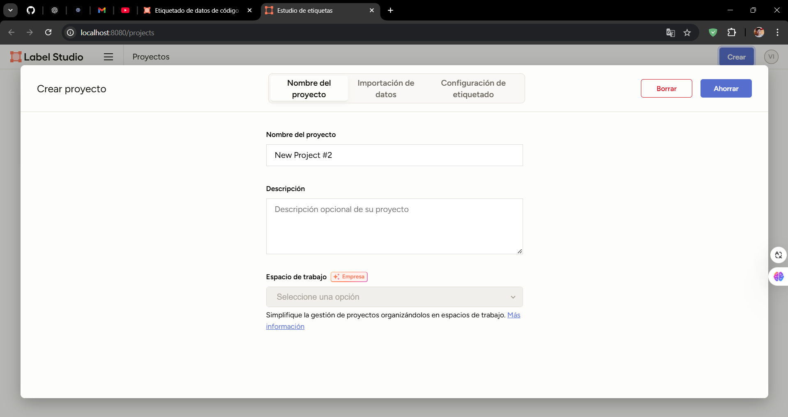
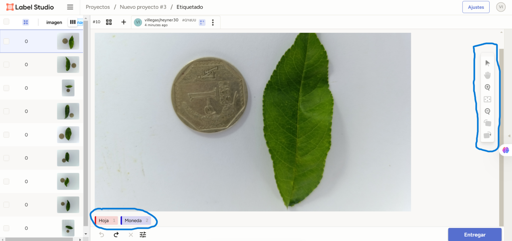

Durazno1
```
I. Introducción
El etiquetado de imágenes es una tarea fundamental en proyectos de análisis de datos y aprendizaje automático, ya que permite clasificar y anotar datos visuales para entrenar modelos de inteligencia artificial. En este proyecto, se realizó el etiquetado de 50 imágenes que incluyen hojas y monedas utilizando Label Studio, una herramienta de código abierto diseñada para la anotación de datos.
El objetivo principal fue preparar un dataset de imágenes etiquetadas que pueda ser utilizado en futuras investigaciones o aplicaciones prácticas, como la identificación automática de especies de plantas o el reconocimiento de objetos. Para llevar a cabo este proceso, se configuró un entorno de trabajo basado en Anaconda y se utilizaron las funcionalidades de Label Studio para crear anotaciones precisas.
En esta página se describe paso a paso el proceso seguido, desde la instalación de los programas necesarios hasta la finalización del etiquetado. Además, se presentan algunos ejemplos de las imágenes etiquetadas, destacando la utilidad de este procedimiento en contextos académicos y tecnológicos.
II. Instalación de Anaconda
¿Que es Anaconda?
Anaconda es una distribución gratuita y de código abierto de Python y R que incluye una colección de paquetes, bibliotecas y herramientas diseñadas específicamente para el análisis de datos, aprendizaje automático y computación científica. Una de las principales ventajas de Anaconda es su facilidad para crear y gestionar entornos virtuales, lo que permite trabajar en proyectos con diferentes configuraciones sin generar conflictos entre dependencias.
En este proyecto, se utilizó Anaconda para instalar y ejecutar Label Studio, una herramienta clave para el etiquetado de imágenes. Anaconda proporcionó un entorno controlado donde fue posible instalar todas las dependencias necesarias sin interferir con otras configuraciones del sistema.
- Como se instala:
Nos dirigimos a la pagina oficial de Anaconda:https://www.anaconda.com/download/success
En esta parte tendremos 2 opciones las cuales son Anaconda que vendria a ser una version mas completa para ser utilizada y la version Miniconda es la mas accesible para su manejo por si no presentas con mucho espacio en tu dispositivo. En nuestro caso grupal escogimos la version Miniconda.
Una vez instalado presionamos windows y buscamos anaconda.
Entramos al sistema y se abrira la interfaz gráfica de Anaconda.
En este punto se necesita 2 comandos para ejecutar, por lo cual iremos al siguiente link: https://labelstud.io/
Inicio rapido: En esta parte nos aparecen 2 comandos.
pip install -U label-studio: este comando se ejecuta en Anaconda para que este realize la instalacion de paquetes necesarios para utilizar. Este proceso puede demorar.
label-studio: este comado sirve para iniciar sesion ya en la pagina de Label Studio, al comienzo se abrira la pagina en tu navegador y tendras que crear una cuenta, una vez realizado este proceso ya tendras tu cuenta disponible para utilizar.
Nota: La interfaz grafica de anaconda debe estar siempre abierta o ejecutada si quieres utilizar tu cuenta de Label Studio ya qeu funcionan al simultaneo. Y para iniciar una vez cerrado todo, solo abres la interfaz de anaconda y ejecutas el segundo codigo.
III. Label Studio
¿Que es?
Label Studio es una herramienta open-source de etiquetado de datos. Permite etiquetar tipos de datos como audio, texto, imágenes, vídeos y series temporales con una interfaz de usuario sencilla y luego exportar a varios formatos de modelos.
Proceso de etiquetado:
- Paso 1:
Se debe tener las imagenes descargadas en tu dispositivo en formato JPG.
- Paso 2:
Se crea un proyecto nuevo en la pagina de Label Studio, se presentara lo siguiente.

Llenas el nombre de tu proyecto, si deseas se agrega una descripción.

En importacion de datos subes las imagenes que quieres etiquetar.
Se debe de ver de esta manera:
En la parte de configuración de etiquetado, aparecerán diferentes tipos de equitado, el que se uso para este trabajo fue la primera opción que se llama: segmentación semántica con poligonos.

Seleccionamos la opción y nos mostrará lo siguiente.
En esta parte solo agregamos los nombres de la etiqueta: Hoja y Moneda y das add; se selecciona el color que mas deseemos al presionar en la etiqueta, obviamente se borra las etiquetas que nos muestran como ejemplo. Luego de eso seleccionamos los cuadrados sin marcar en configurar ajustes y damos ahorrar o save si esta en ingles su pagina.
IV. Ejecución para el etiquetado
Continuando con lo ya mencionado, las imagenes que cargaste te aparecerán de la siguiente manera en tu proyecto.
Lo que se tiene que hacer aqui y lo que se hizo con el resto de integrados del grupo de trabajo fue selecionar imagen por imagen y hacer el etiquetado de cada uno.
Al selecionar una de las imagenes te aparecerán la etiqueta de Hoja y Moneda al pie de la imagen.
En la parte derecha se veran comandos para usar al momento de etiquetar la imagen.

COMANDOS:
Flecha: sirve para mover.
Manito: Sirve para agarrar la imagen para tener una vista panorámica.
Lupa con un +: Sirve para ahacer zoom.
Cuadrado con flechitas en su interior: sirve para apliar y ajustar el tamaño real de la imagen.
Lupa con -: sirve para quitar el zoom.
Dos ultimos comandos: sirve para girar la imagen ya sea derecha o izquierda.
- Al selecionar el etiquetado en este caso de Hoja y presionar en la imagen correspondiente se presentara un punto del color seleccionado y solo se debe delinear el contor de la hoja hasta cerrar con el primer punto, como se muestra a continuación:
- Luego de esto se selecciona la etiqueta moneda y se realiza lo mismo.

- Al utilizar los comandos mencionados se puede hacer un etiquetado mas preciso y preciso.
Damos en entragar y ya estaria, este proceso se realiza en todas las imagenes que se subieron al momento de crear el proyecto.
Teniendo ya todos las imagenes etiquetadas se exporta los datos obtenidos en el formato Coco o Palma deCoco.
Los datos exportados suelen servir para entrenar algoritmos de aprendizaje, entre otras cosas.
V. Resultados
El grupo estuvo conformado por 6 personas, en la cual se etiqueto 50 imagenes en total.
A continuacion presento evidencia de sus partes realizadas:
- Jheyner Villegas Mas:
- Magaly Saldaña Bazán:

- Desly Nicoll Carranza Gonzales:


- Mady Isabel Vela LLaja:


- Noelia patricia Bustamante Lopez:


- Liany Damaris Monsalve Soto:
VI. Conclusión
El proceso de etiquetado de imágenes utilizando herramientas como Label Studio, en combinación con plataformas de gestión de entornos como Anaconda, demuestra la importancia de contar con un flujo de trabajo organizado y eficiente. La creación de un dataset de 50 imágenes etiquetadas con hojas y monedas no solo permitió explorar las capacidades de estas herramientas, sino que también sentó las bases para futuros proyectos en análisis de imágenes y aprendizaje automático.
El uso de Anaconda garantizó un entorno estable para la instalación y ejecución de Label Studio, simplificando el manejo de dependencias y asegurando la reproducibilidad del proyecto. Por su parte, Label Studio facilitó el etiquetado preciso de las imágenes gracias a su interfaz intuitiva y funcionalidades avanzadas.
Este proyecto pone en evidencia el valor de las herramientas tecnológicas en la generación de datasets de calidad, lo que resulta esencial en aplicaciones académicas, industriales y científicas.